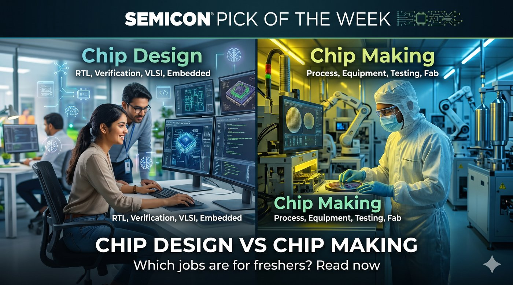

Home › Pick of the week
Pick of the week · Careers explainer
Chip design vs chip making: which jobs are for freshers?
The chip industry has two big sides. One plans the chip on computers. The other makes it in a factory. Both hire freshers, but for different skills.

In short
- Chip design happens in offices on computers: RTL design, verification, physical design and embedded software.
- Chip making happens in fabs and packaging plants: process, equipment, testing and quality.
- Most fresher jobs in India today are on the design side. Making jobs will grow as new fabs and plants open.
The two sides at a glance
DesignBengaluru, Hyderabad, Noida, Pune, Chennai
MakingGujarat (Dholera, Sanand), Assam and other new plant sites
Chip design jobs
- RTL design: write the chip's logic in Verilog or SystemVerilog.
- Design verification (DV): test the design in software before it is made. The biggest hirer of freshers.
- Physical design: turn the design into a real layout and fix timing.
- DFT: add test logic so each chip can be checked after it is made.
- Embedded / firmware: write the low-level software that runs on the chip.
Skills to build: digital electronics, Verilog/SystemVerilog, a bit of UVM, Linux, and Python or TCL scripting.
Chip making jobs
- Process engineer: runs and improves one step of making the chip.
- Equipment engineer: keeps costly machines running. Suppliers near fabs hire many.
- Test and product engineer: tests finished chips and finds why some fail.
- Quality and reliability: makes sure chips last for years.
Skills to build: semiconductor devices, basic chemistry and physics, statistics, and comfort working in clean rooms and shifts.
Which one should a fresher pick?
Pick design if…
- You like coding and logic puzzles.
- You want to work in Bengaluru or Hyderabad.
- You have done a Verilog or FPGA project.
Pick making if…
- You like machines, materials and hands-on work.
- You are open to living near a new plant, like in Gujarat or Assam.
- You want to grow with India's first big chip factories.
Good to know
- Testing and verification skills are useful on both sides.
- You can move between sides later in your career.